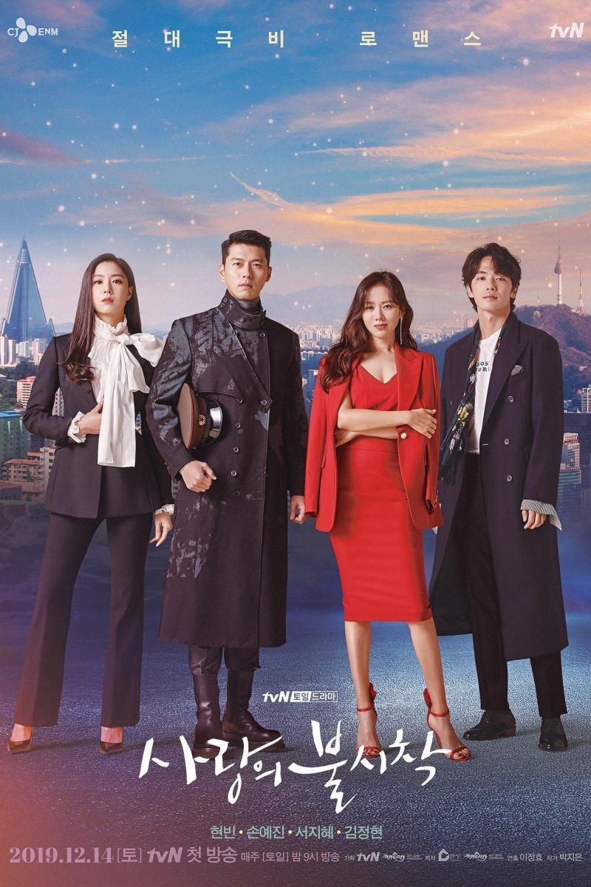

La década de 1980 vio un giro en la televisión coreana, con la llegada de imágenes a color. Los dramas modernos trataron de evocar la nostalgia de los habitantes de las ciudades al describir la vida rural. El guionista Kim Soo Hyun produjo su primer éxito comercial, Amor y Ambición (사랑과 야망), 12 que salió al aire en MBC durante 1987 y es considerada como un hito de la televisión coreana, después de haber registrado una audiencia del 78%.13 Se considera que la serie histórica clásica más sobresaliente de la época fue 500 años de Joseon (조선 왕조 500년), una serie que duró ocho años y consta de 11 series separadas. La serie fue producida por Lee Byung Hoon, que años más tarde dirigió uno de los mayores éxitos internacionales de drama coreano, Una joya en el palacio (대장금; 大長今).1014La década de 1990 trajo otro hito importante para la televisión coreana. A medida que la tecnología era desarrollada, nuevas oportunidades surgieron, y el comienzo de la década marcó el lanzamiento de un nuevo canal comercial, Seoul Broadcasting System (SBS), que facilitó y reinició una carrera por captar la atención de los espectadores. Uno de los éxitos comerciales de esa época fue Ojos del amanecer (여명 의 눈동자), emitida en 1991 por MBC, protagonizada por Chae Shi Ra y Choi Jae Sung, la serie llevó a los espectadores a través de los tiempos turbulentos desde la ocupación japonesa a la guerra de Corea. 12 Mientras el nuevo canal SBS también produjo series de éxito, siendo uno de ellos Sandglass (모래시계; 모래時計) en 1995.

Posteriormente, se introdujo un nuevo formato que cambió la forma en que los dramas coreanos eran emitidos, minimizando el tiempo en pantalla con 12 a 24 episodios, finalmente esta época marcó el inicio de la exportación para las series locales, lo que desencadenó la ola coreana a finales de la década.12 En los primeros años del nuevo milenio se dio a luz a un nuevo género, llamado Sageuk fusión, cambiando esencialmente las formas de producir series históricas, con piezas exitosas como Hur Jun (허준; 許浚), Damo (다모; 茶母) o Una joya en el palacio (대장금; 大長今).14 Asimismo, durante la década varias series lograron popularidad internacional, esto provocó nuevas mejoras en la producción.
En 2017 el formato volvió a cambiar debido a la actualización de la ley de difusión surcoreana que prohibió los cortes en los programas de televisión para emitir anuncios y por ello algunos canales como SBS adoptaron la práctica de emitir dos episodios en lugar de uno de la misma longitud para poner anuncios en medio. La legislación debió ser cambiada por las reclamaciones de los espectadores a los canales de televisión que ofrecían alta cantidad de cortes. No obstante, el financiamiento proviene principalmente de los anunciantes que pagan en promedio al menos ₩13,5 millones por 15 segundos de publicidad.15